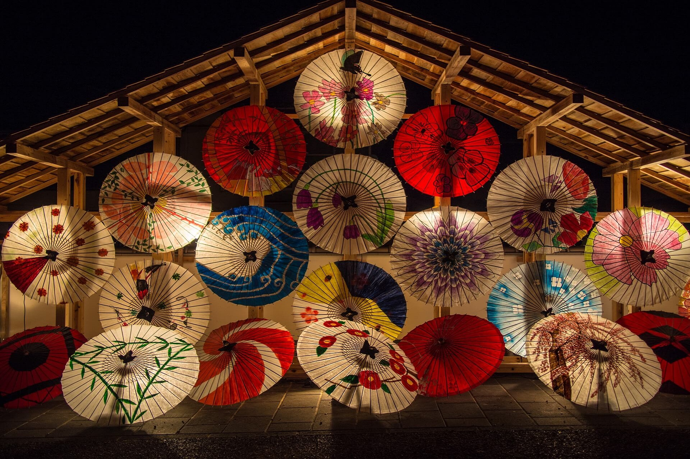

- 
北条からのお知らせ
御成敗式目はじめました（泰時）
幕府、やや引越しました（泰時）
六波羅探題はじめました（義時）
過去ろぐ (*´д｀*)
1199年 十三人の合議制がはじまりました（義時）
1199年 諸事情により、梶原殿が追放されました（義時）
1203年 諸事情により、比企氏が亡くなられました（義時）
1203年 諸事情により、鎌倉殿が交代されました（義時）
1203年 父が執権となりました（義時）
1205年 諸事情により、畠山殿が亡くなられました（義時）
1205年 諸事情により、父を隠居させました（義時）
1213年 諸事情により、和田殿が滅亡されました（義時）
1219年 諸事情により、鎌倉殿が交代されました(義時）
1221年 倒幕の動き有り、反撃しました（義時）
1221年 六波羅探題はじめました（義時）
1224年 亡父・義時の跡を継ぎ執権就任（泰時）
1225年 叔母・政子が亡くなりました（泰時）
1225年 幕府を少し引っ越しました（泰時）
1232年 御成敗式目はじめました（泰時）
とじる
幕府（移転先）
これはダミーの地図です
六波羅探題
これはダミーの地図です
主要政策
御恩と奉公（御家人制度）
評定会議による合議制
六波羅探題の設置
武士のための御成敗式目
主な機構
- 評定会議
- 最高決定機関
- 引付会議
- 御家人の裁判機関
- 六波羅探題
- 朝廷監視/西国出張所
- 侍所
- 軍事等の部署
- 公文所
- 政務、財務等の部署
- 問注所
- 裁判関連の部署